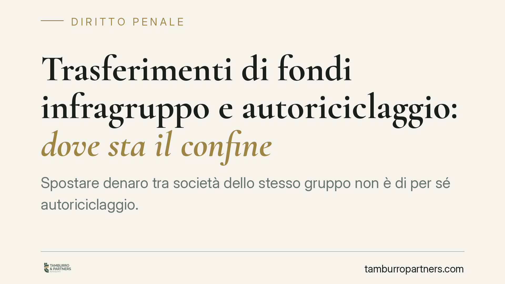
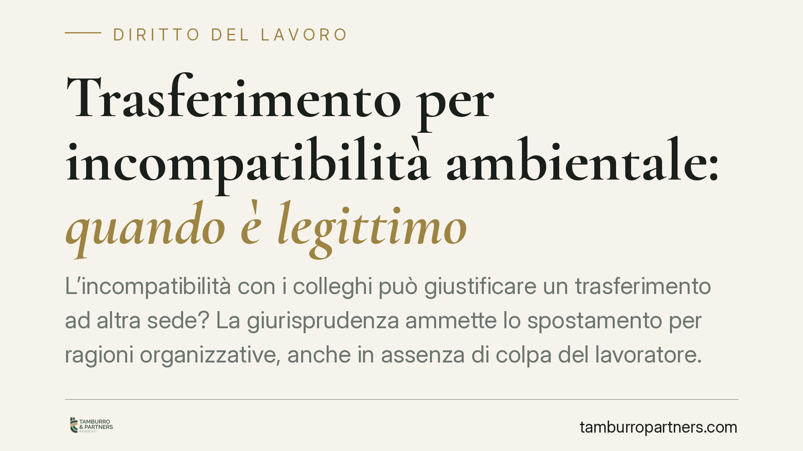
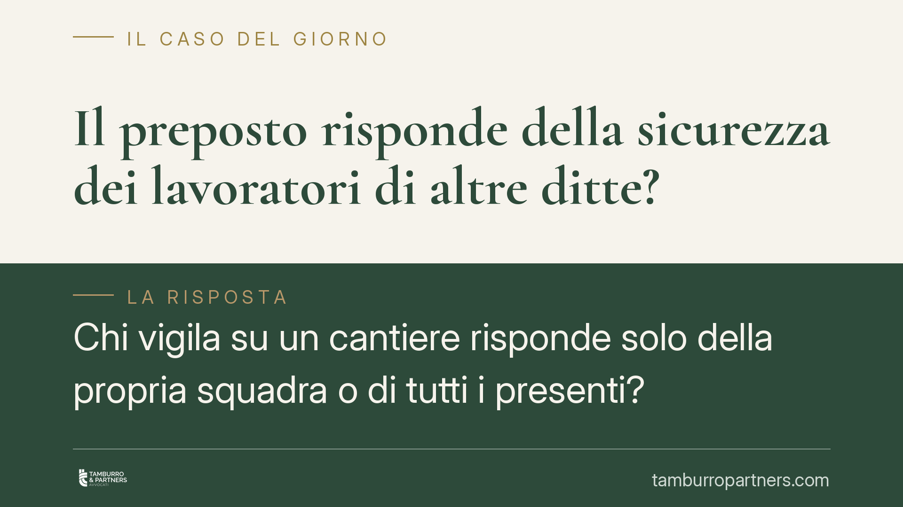
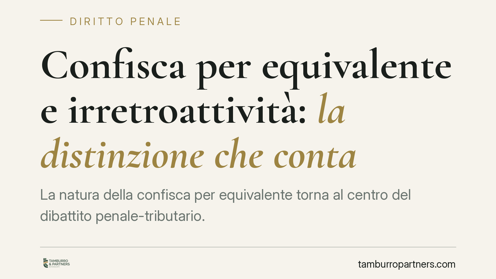

Diritto alla riparazione: cosa cambierà per i consumatori
L'Unione europea ha introdotto un diritto alla riparazione destinato a incidere su garanzie, contratti e filiera dei ricambi. La Direttiva (UE) 2024/1799 va recepita entro il 31 lu…

Spese legali nelle cause contro l'INPS: quando non si compensano
Vincere una causa previdenziale contro l'INPS non garantisce automaticamente il rimborso delle spese legali. Il giudice può compensarle, ma solo in casi gravi ed eccezionali e con …

Quota 100 e cumulo redditi: la contestazione INPS e i limiti al recupero
L'INPS avvia recuperi nei confronti dei titolari di Quota 100 che hanno percepito redditi da lavoro in violazione del divieto di cumulo. Un orientamento giurisprudenziale, i cui es…

Recupero crediti in condominio: quando viola la privacy
Affiggere in bacheca o diffondere via chat i nomi dei condòmini morosi è una prassi diffusa quanto rischiosa. La divulgazione dei dati a una platea indeterminata viola la normativa…

Fondo per i lavori straordinari in condominio: obbligo, deroghe e vizi della delibera
L'assemblea che approva lavori straordinari deve costituire un fondo speciale di importo pari a quello dei lavori. L'art. 1135, comma 1, n. 4, cod. civ. lo impone, ma la portata de…

Permessi 104 per lo sport: la Cassazione sul licenziamento
La Corte d'Appello di Palermo conferma il licenziamento per giusta causa del dipendente che usava i permessi della Legge 104 per giocare a padel. La decisione legittima il controll…

Video girati in ufficio e pubblicati sui social: quando scatta il licenziamento
Un video girato in ufficio e pubblicato sui social può giustificare il licenziamento? La questione tocca sia il datore, che deve valutare proporzionalità e prova, sia il lavoratore…

E-evidence: ordini europei di produzione e conservazione delle prove elettroniche
È stato pubblicato il decreto di attuazione del cosiddetto pacchetto e-evidence, che completa l'adeguamento dell'ordinamento italiano al Regolamento (UE) 2023/1543 sugli ordini eur…

IA e decisioni sul lavoro: il diritto alla spiegazione secondo l'AI Act
Il Regolamento UE 2024/1689 (AI Act) riconosce a chi subisce una decisione basata su sistemi di IA ad alto rischio il diritto a ottenerne una spiegazione. Per i datori di lavoro ch…

Fondo speciale per lavori straordinari in condominio: quando è davvero obbligatorio
La Corte d'Appello di Milano, con sentenza n. 278/2026, precisa che la mancata costituzione del fondo speciale per i lavori straordinari non rende sempre nulla la delibera assemble…

Scudo penale per i medici: verso la punibilità solo per colpa grave
È all'esame della Camera un disegno di legge delega che punta ad ampliare lo scudo penale per i sanitari, limitando la punibilità alla sola colpa grave, non più alla sola imperizia…

Diligenza del commercialista: il dovere di controllo sulle fatture del cliente
Con l'ordinanza 21061/2026 la Cassazione afferma che la diligenza qualificata del commercialista comporta un dovere di controllo e segnalazione delle anomalie nella documentazione …

Distanze tra edifici violate: quando scatta la demolizione totale
La violazione delle distanze legali tra edifici non è un dettaglio formale. Quando il vizio è sostanziale e tocca la collocazione stessa del fabbricato, la giurisprudenza amministr…

Video aziendali come prova: controlli difensivi e false timbrature
Le riprese effettuate in azienda possono essere utilizzate come prova per smascherare le false timbrature? Una recente pronuncia della Seconda Sezione penale della Cassazione torna…

Assegno di mantenimento pagato in eccesso: si può chiedere la restituzione?
Chi versa un assegno di mantenimento più alto del dovuto può chiederne la restituzione quando l'importo viene poi ridotto? La giurisprudenza prevalente dice di no: le somme destina…

L'avviso al portiere non basta a convocare l'erede condomino
Il Tribunale di Firenze, con la sentenza n. 3540/2026, ha stabilito che la consegna dell'avviso di convocazione al portiere non costituisce valida convocazione per l'erede che risi…

Usucapione e ipoteca: perché l'immobile non si libera dai debiti
Chi acquisisce un immobile per usucapione lo riceve, davvero, libero da ipoteche? La giurisprudenza di legittimità frena questa aspettativa diffusa. La sentenza che accerta l'usuca…

Decreto sicurezza: cosa cambia per i minori dai 14 anni e per i genitori
Il Consiglio dei Ministri ha approvato un decreto-legge su sicurezza pubblica e criminalità minorile. Cambiano l'accertamento dell'imputabilità dai 14 anni, arrivano sanzioni per i…

Conto corrente separato per i lavori in condominio: è obbligatorio?
I lavori straordinari muovono somme spesso rilevanti e molti condòmini si chiedono se l'amministratore debba aprire un conto dedicato. La legge impone un conto intestato al condomi…

Trasferimenti di fondi infragruppo e autoriciclaggio: dove sta il confine
Spostare denaro tra società dello stesso gruppo non è di per sé autoriciclaggio. Una pronuncia della Cassazione in commento torna sul punto: senza il reato presupposto, manca la ba…

Trasferimento per incompatibilità ambientale: quando è legittimo
L'incompatibilità con i colleghi può giustificare un trasferimento ad altra sede? La giurisprudenza ammette lo spostamento per ragioni organizzative, anche in assenza di colpa del …

Il preposto risponde della sicurezza dei lavoratori di altre ditte?
Chi vigila su un cantiere risponde solo della propria squadra o di tutti i presenti? Secondo una recente pronuncia della Cassazione penale, il dovere di controllo e segnalazione de…

Confisca per equivalente e irretroattività: la distinzione che conta
La natura della confisca per equivalente torna al centro del dibattito penale-tributario. Quando una misura ha carattere afflittivo, un orientamento giurisprudenziale più sfavorevo…
Verbale condominiale e messaggi WhatsApp: valgono come prova?
Uno screenshot WhatsApp può smentire un verbale assembleare che attesta l'approvazione all'unanimità? Per la Corte d'Appello di Brescia no, se la copia fotografica non è certa e il…

Esalazioni fognarie dalle parti comuni: la tutela d'urgenza contro l'inerzia del condominio
Il Tribunale di Roma ha riconosciuto l'uso del ricorso d'urgenza ex art. 700 c.p.c. contro le esalazioni fognarie provenienti da parti comuni, anche quando il danno si è già manife…

Omessa denuncia di illeciti sul lavoro: quando scatta il licenziamento
La Corte di Cassazione torna sul tema dell'omertà nei luoghi di lavoro: chi riveste un ruolo di vigilanza e, pur consapevole degli illeciti commessi dai sottoposti, omette di segna…

Antincendio in condominio: controlli solo da tecnici qualificati
Dal 26 settembre 2026 i controlli e la manutenzione dei presidi antincendio condominiali potranno essere affidati soltanto a tecnici qualificati. Il cambiamento riguarda ogni ammin…

Salario adeguato e contratto leader: dove sta andando la riforma delle buste paga
Si discute di un parametro legale per la retribuzione adeguata, agganciato ai contratti collettivi comparativamente più rappresentativi. L'obiettivo dichiarato è ridurre la discrez…

Decreto sicurezza e manifestazioni: cosa cambia per chi partecipa ai cortei
Il Consiglio dei ministri ha approvato un decreto legge in materia di sicurezza che inasprisce il trattamento penale delle condotte violente nelle manifestazioni, introduce l'arres…

Pacchetto sicurezza e minori: quando rispondono i genitori
Il recente pacchetto sicurezza ha riacceso il dibattito su ordine pubblico, minori autori di reato e ruolo dei genitori. Tra nuove fattispecie penali, misure sulla flagranza e prof…